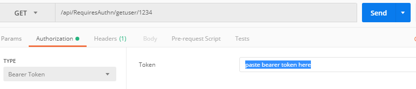

First, make the user log in via an authentication provider (e.g. Google, Azure AD, Microsoft account)
The authn provider will send the user’s token to your website (the reply URL you specify)
From your website, you take this token (which typically includes the user’s email and name) and verify it using another endpoint provided by the authn provider.
You actually don’t need a web application to make use of OAuth. According to this answer, you can use a special client ID and reply URL to obtain a JWT (which includes the user’s name and email address).
Because this is a console app and you want to use OAuth for authentication, you have to create a project that targets .NET Framework. The reason is that it pops up a browser window (which is tied to .NET Framework) to have the user (who is at the command line) authenticate to Microsoft. This is done in the PromptForAuthn method.
Because this token is submitted to you by the user, you have to take this token and send it to https://login.microsoftonline.com/... and to verify the token’s signature. Which is what the Validate method does.
using Microsoft.IdentityModel.Clients.ActiveDirectory;
using Microsoft.IdentityModel.Protocols;
using Microsoft.IdentityModel.Protocols.OpenIdConnect;
using Microsoft.IdentityModel.Tokens;
using System;
using System.Collections.Generic;
using System.IdentityModel.Tokens.Jwt;
using System.Linq;
using System.Net.Http.Headers;
using System.Text;
using System.Threading.Tasks;
namespace GettingAADToken
{
class Program
{
static void Main(string[] args)
{
var token = PromptForAuthn();
var x = Validate(token.Parameter);
var name = x.Claims.Where(y => y.Type == "upn").First().Value;
}
static string requestedResource = "499b84ac-1321-427f-aa17-267ca6975798"; //azure devops
static string clientId = "872cd9fa-d31f-45e0-9eab-6e460a02d1f1"; //visual studio
static string tenantId = "72f988bf-86f1-41af-91ab-2d7cd011db47"; // Microsoft tenant's ID
public static AuthenticationHeaderValue PromptForAuthn()
{
AuthenticationContext ctx = GetAuthenticationContext(tenantId);
AuthenticationResult result = null;
IPlatformParameters promptBehavior = new PlatformParameters(PromptBehavior.Auto);
try
{
result = ctx.AcquireTokenAsync(requestedResource, clientId, new Uri("urn:ietf:wg:oauth:2.0:oob"), promptBehavior).Result;
Console.WriteLine("Token expires on: " + result.ExpiresOn);
var bearerAuthHeader = new AuthenticationHeaderValue("Bearer", result.AccessToken);
return bearerAuthHeader;
}
catch (UnauthorizedAccessException)
{
// If the token has expired, prompt the user with a login prompt
result = ctx.AcquireTokenAsync(requestedResource, "872cd9fa-d31f-45e0-9eab-6e460a02d1f1", new Uri("urn:ietf:wg:oauth:2.0:oob"), promptBehavior).Result;
}
catch (Exception ex)
{
Console.WriteLine("{0}: {1}", ex.GetType(), ex.Message);
}
return null;
}
private static AuthenticationContext GetAuthenticationContext(string tenant)
{
AuthenticationContext ctx = null;
if (tenant != null)
ctx = new AuthenticationContext("https://login.microsoftonline.com/" + tenant);
else
{
ctx = new AuthenticationContext("https://login.windows.net/common");
if (ctx.TokenCache.Count > 0)
{
string homeTenant = ctx.TokenCache.ReadItems().First().TenantId;
ctx = new AuthenticationContext("https://login.microsoftonline.com/" + homeTenant);
}
}
return ctx;
}
public static JwtSecurityToken Validate(string token)
{
string stsDiscoveryEndpoint = "https://login.microsoftonline.com/common/v2.0/.well-known/openid-configuration";
ConfigurationManager<OpenIdConnectConfiguration> configManager = new ConfigurationManager<OpenIdConnectConfiguration>(stsDiscoveryEndpoint, new OpenIdConnectConfigurationRetriever());
OpenIdConnectConfiguration config = configManager.GetConfigurationAsync().Result;
TokenValidationParameters validationParameters = new TokenValidationParameters
{
ValidateAudience = true,
ValidateIssuer = true,
IssuerSigningKeys = config.SigningKeys,
ValidateLifetime = true
};
validationParameters.ValidAudience = requestedResource;
validationParameters.ValidIssuer = $"https://sts.windows.net/{tenantId}/";
JwtSecurityTokenHandler tokendHandler = new JwtSecurityTokenHandler();
SecurityToken jwt;
var result = tokendHandler.ValidateToken(token, validationParameters, out jwt);
return jwt as JwtSecurityToken;
}
}
}
This is a .NET Core 2.1 example. You can start from a blank Web API project.
Step 1: Add a secret string
This will be used to generate and verify the bearer token. I’ll be providing code to read the token from an environment variable so you don’t check secrets into git.
appsettings.json
{
"Logging": {
...
},
"AppSettings": {
"Token": "myTokenEnvVar"
}
}
Step 2: Add token generation logic to your authentication logic
Make a new controller called AuthnController with the following method. Of course, this won’t work yet because you need to set up some configuration. But go ahead and try it anyways and see what happens.
using System;
using System.Collections.Generic;
using System.IdentityModel.Tokens.Jwt;
using System.Linq;
using System.Security.Claims;
using System.Text;
using System.Threading.Tasks;
using Microsoft.AspNetCore.Authorization;
using Microsoft.AspNetCore.Mvc;
using Microsoft.Extensions.Configuration;
using Microsoft.IdentityModel.Tokens;
...
private readonly IConfiguration _config;
public AuthnController(IConfiguration config)
{
_config = config;
}
[HttpPost("login")]
public IActionResult Login([FromBody] UserPassModel up)
{
if(IsUserValid(up.Username, up.Password)) //this would be some backend database check
{
return Unauthorized();
}
var tokenHandler = new JwtSecurityTokenHandler();
//read the key from the environment variable
var key = Encoding.ASCII.GetBytes(
System.Environment.GetEnvironmentVariable(
_config.GetSection("AppSettings:Token").Value,
EnvironmentVariableTarget.User
)
);
var tokenDescriptor = new SecurityTokenDescriptor
{
Issuer = "self", //in our scenario, Issuer and Audience won't be verified, only the key will
Audience = "aud",
Subject = new System.Security.Claims.ClaimsIdentity(new Claim[]
{
new Claim(ClaimTypes.Email, "emailAddressHere"),
new Claim(ClaimTypes.Name, up.Username)
//you can have as few or as many claims here
}),
Expires = DateTime.UtcNow.AddDays(10),
SigningCredentials = new SigningCredentials(
new SymmetricSecurityKey(key),
SecurityAlgorithms.HmacSha256Signature)
};
var token = tokenHandler.CreateToken(tokenDescriptor);
var tokenString = tokenHandler.WriteToken(token);
return Ok(tokenString);
}
Step 3: Add Configuration code to Startup.cs
public void ConfigureServices(IServiceCollection services)
{
services.AddMvc();
var key = Encoding.ASCII.GetBytes(
System.Environment.GetEnvironmentVariable(
Configuration.GetSection("AppSettings:Token").Value,
EnvironmentVariableTarget.User
)
);
services.AddAuthentication(Microsoft.AspNetCore.Authentication.JwtBearer.JwtBearerDefaults.AuthenticationScheme)
.AddJwtBearer(options =>
{
options.IncludeErrorDetails = true;
options.TokenValidationParameters = new Microsoft.IdentityModel.Tokens.TokenValidationParameters
{
ValidateIssuerSigningKey = true,
IssuerSigningKey = new Microsoft.IdentityModel.Tokens.SymmetricSecurityKey(key),
ValidIssuer = "self",
ValidateIssuer = true,
ValidateAudience = false
};
});
}
Step 4: Add code to the Configure() method in the same file
This one is easily missed. You have to add app.UseAuthentication() and this has to be before app.UseMvc()
public void Configure(IApplicationBuilder app, IHostingEnvironment env)
{
if (env.IsDevelopment())
{
app.UseDeveloperExceptionPage();
}
app.UseAuthentication(); //<-- this is important
app.UseMvc();
}
Step 5: Profit
Finally, you need a method that requires authentication to test this out.
You need to add the [Authorize] attribute to the controller.
[Authorize]
[Route("api/[controller]")]
public class RequiresAuthnController : Controller
{
[HttpGet("getuser/{id}")]
public IActionResult GetUser(int id)
{
return Ok("user here " + id + User.Identity.Name);
}
Here’s what it looks like in Postman

[todo: add snippet to sign in with Google/Microsoft account for a web application]